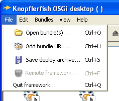

Open Source OSGi Service Platform Maintained by

Nightly builds (off)
Nightly tests (off)
Manual (snapshot)
Mailing lists

Forum

How to Activate the "Remote framework..." Menu Item in the Knopflerfish Desktop
 The Knopflerfish Desktop has the ability to remote control frameworks running on other computers or devices (including headless devices that cannot run the desktop them selves). This document describes how to activate this feature. Typically, the "Remote framework..." menu item (in the File menu) is greyed out. The reason for this is that, typically, the remote framework service that the desktop is looking for is not present. To connect to a remote framework, the desktop needs an implementation of the org.knopflerfish.service.remotefw.RemoteFramework interface. This implementation decides which protocol to use and handles the communication. The implementation described here uses kSOAP 2, which is a small-footprint SOAP implementation on top of kXML. It provides remote access to all functionality in the desktop (including the log tab and the console).Terminology
Server: The server in this context is the remote controlled framework that waits for connections to its SOAP servlet. Client: The client in this context is the framework that is running the desktop that is connecting to and controlling the server.Needed Bundles
Two special bundles are needed both on the server and the client side:- ksoap-osgi (ksoap-osgi_all-1.0.0.jar) - Contains the kSOAP libs and registers the SOAP servlet.
- ksoap_remotefw (ksoap_remotefw_all-1.0.0.jar) - Supplies the RemoteFramework implementation (on the client) and handles .
- desktop (desktop_all-1.1.0.jar) - Needed on the client (of course).
- remotefw_api (remotefw_api-1.0.0.jar) - Needed on the server to provide the org.knopflerfish.service.remotefw package (when the desktop is not installed).
Configuration
The configuration is done with system properties. All of them have reasonable defaults and things will work without configuration.Server
- org.osgi.service.http.port - Defines the port for the HTTP server. Defaults to 80.
- org.knopflerfish.soap.remotefw.server - Can be set to true on the client just to make it clear that it is a server. Defaults to true.
- org.knopflerfish.soap.remotefw.client - Can be set to false on the server. No RemoteFramework service will be registered and the desktop (if installed) will not be able to use the remote framework feature. Defaults to true.
Client
- org.knopflerfish.soap.remotefw.client.eventinterval - Defines the time (in ms) between polls to get events and log entries from the server. Defaults to 3000.
- org.knopflerfish.soap.remotefw.server - Can be set to false on the client. No servlet will be registered and other desktops will not be able to connect to this framework. Defaults to true.
- org.knopflerfish.soap.remotefw.client - Can be set to true on the client just to make it clear that it is a client. Defaults to true.
- org.knopflerfish.soap.remotefw.client.sendlocalpaths - Set to true to avoid sending base64 encoded bundles when installing. Defaults to false.
Common
- org.knopflerfish.soap.remotefw.client.debug - If set to true, causes the ksoap bundles to print some debug information. Defaults to false.